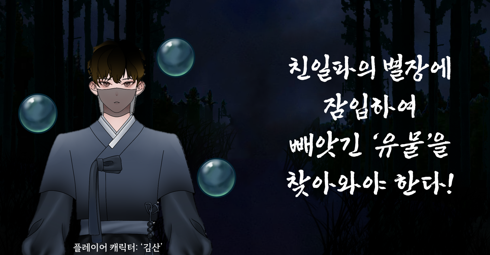

ZERAH
“Crafting virtual realities that feel alive.”
🍅
'산군' – 신의 유산을 되찾는 방탈출 어드벤처
🍇Level Up Labs(LUL)🍇의 첫 번째 프로젝트인 ‘산군’입니다.
·장르: 시대극, 방탈출, 퍼즐 어드벤처
·플랫폼: PC
·엔진: Unity
·유형: 2D 횡스크롤
·러닝타임: 약 90분
·제작 기간: 4개월
·참여 인원: 10명
🐅 산군 게임 특징 🐅
·멀티 엔딩 구조:
플레이어의 선택에 따라 1개의 진엔딩과 3개의 분기 엔딩이 존재합니다.
·방탈출 기반 퍼즐 시스템:
총 5개의 스테이지로 구성되어 있으며, 각 방에서는 오브젝트 상호작용을 기반으로 한 퍼즐이 배치되어 있습니다.
·스토리 카드 시스템:
게임 진행 중 획득한 단서, 조작법, 스토리를 모아 언제든지 열람할 수 있는 카드 기반 로그 시스템을 구현했습니다.
·조명 시스템:
시간 경과에 따라 플레이어의 등이 점점 어두워지며, 타임어텍과 긴장감을 제공합니다.
4개월, 학기 중에 짧게 진행된 프로젝트인 만큼 아트 및 사운드 리소스는 모두 팀 내에서 자체 제작되었지만, 실제 개발은 Stage1까지만 구현된 상태에서 마무리되었습니다. 이후 팀 프로젝트와 계획했던 활동이 모두 종료된 뒤, 개인적으로 전체 스테이지를 완성하고 멀티엔딩 구조까지 포함해 게임을 끝까지 개발했습니다. 완성한 게임은 다음 링크를 통해 실행해 보실 수 있습니다!
팀 LUL(Level Up Labs)은 학부생 10인으로 구성된 팀으로, 개발 4인, 기획 2인, 아트 3인, 사운드 1인으로 이루어져 있습니다. 저는 팀장 및 메인 개발자로서 초기 기획 방향 설정부터 팀원 모집, 개발 스케줄 조율까지 전반을 주도했으며, 학교 커뮤니티를 통해 직접 사람들을 모아 팀을 구성했습니다. 짧은 기간동안 학교 수업과 병행하며 프로젝트를 진행하느라 우여곡절이 많았으나, 프로젝트를 끝까지 마무리 하고 교내 대회까지 출품하는 성과를 얻었습니다.

🐯산군 게임 개요🐯·장르: 시대극, 방탈출, 퍼즐 어드벤처
·플랫폼: PC
·엔진: Unity
·유형: 2D 횡스크롤
·러닝타임: 약 90분
·제작 기간: 4개월
·참여 인원: 10명
🐅 산군 게임 특징 🐅
·멀티 엔딩 구조:
플레이어의 선택에 따라 1개의 진엔딩과 3개의 분기 엔딩이 존재합니다.
·방탈출 기반 퍼즐 시스템:
총 5개의 스테이지로 구성되어 있으며, 각 방에서는 오브젝트 상호작용을 기반으로 한 퍼즐이 배치되어 있습니다.
·스토리 카드 시스템:
게임 진행 중 획득한 단서, 조작법, 스토리를 모아 언제든지 열람할 수 있는 카드 기반 로그 시스템을 구현했습니다.
·조명 시스템:
시간 경과에 따라 플레이어의 등이 점점 어두워지며, 타임어텍과 긴장감을 제공합니다.
4개월, 학기 중에 짧게 진행된 프로젝트인 만큼 아트 및 사운드 리소스는 모두 팀 내에서 자체 제작되었지만, 실제 개발은 Stage1까지만 구현된 상태에서 마무리되었습니다. 이후 팀 프로젝트와 계획했던 활동이 모두 종료된 뒤, 개인적으로 전체 스테이지를 완성하고 멀티엔딩 구조까지 포함해 게임을 끝까지 개발했습니다. 완성한 게임은 다음 링크를 통해 실행해 보실 수 있습니다!
팀 LUL(Level Up Labs)은 학부생 10인으로 구성된 팀으로, 개발 4인, 기획 2인, 아트 3인, 사운드 1인으로 이루어져 있습니다. 저는 팀장 및 메인 개발자로서 초기 기획 방향 설정부터 팀원 모집, 개발 스케줄 조율까지 전반을 주도했으며, 학교 커뮤니티를 통해 직접 사람들을 모아 팀을 구성했습니다. 짧은 기간동안 학교 수업과 병행하며 프로젝트를 진행하느라 우여곡절이 많았으나, 프로젝트를 끝까지 마무리 하고 교내 대회까지 출품하는 성과를 얻었습니다.